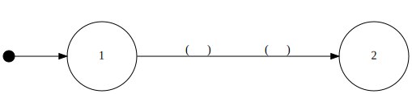
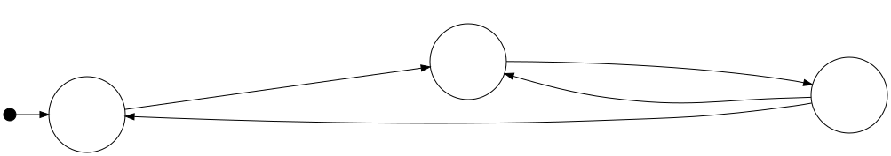
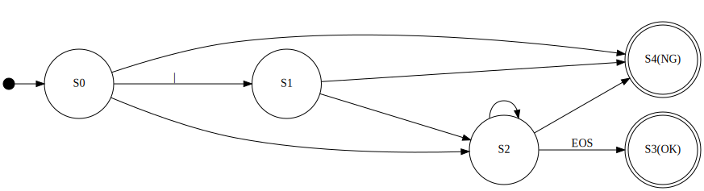

<!doctype html>
<html lang="en">
	<head>
		<meta charset="utf-8">
		<meta name="viewport" content="width=device-width, initial-scale=1.0, maximum-scale=1.0, user-scalable=no">

		<title>reveal.js</title>

		<link rel="stylesheet" href="dist/reset.css">
		<link rel="stylesheet" href="dist/reveal.css">
		<link rel="stylesheet" href="dist/theme/black.css">

		<!-- Theme used for syntax highlighted code -->
		<link rel="stylesheet" href="plugin/highlight/monokai.css">
	</head>
	<body>
		<div class="reveal">
			<div class="slides">
				<section data-markdown=""
				data-separator="^\n---$"
				data-separator-vertical="^\n>>>$">
				<script type="text/template">
### 計算モデルからみたプログラミング
株式会社 ボールド 技術部 鳥海秀一


---
### 前回のまとめ
- - -
* 処理対象のデータに注目することで読みやすいプログラムを作ることができる
* 処置対象のデータの分析にはジャクソン構造図が使える

---
### 今回のテーマ
- - -
* データを処理するコンピュータ（計算モデル）に視点を移してプログラムを作成する

---
### 計算モデルとは
- - -
* 計算機構を抽象的に捉えた数学的な枠組み
* これにより計算に関する様々な議論が可能になる
* 計算モデルの例
	* チューリングマシン
	* ラムダ計算
	* レジスタマシン
	* スタックマシン

---
### チョムスキーの階層
- - -
* 言語学者のチョムスキーはチューリングマシンに制限を加えた以下のモデルを考案した
|ﾀｲﾌﾟ|マシン|文法|
|-|-|-|
|0|チューリングマシン|句構造文法|
|1|線形有界オートマトン|文脈依存文法|
|2|ﾌﾟｯｼｭﾀﾞｳﾝオートマトン|文脈自由文法|
|3|有限オートマトン|正規文法|


---
### 正規文法とは
- - -
* 正規文法は有限オートマトンが理解する文法
* 正規文法を字句解析に応用したものが正規表現
* 正規文法は状態遷移図で表現できる（等価）

---
### 状態遷移図とは
- - -
* 対象がどのような状態を持ち、どのような条件や出来事（イベント）によりそれらの間を遷移するかを一覧に表した図

---
### 状態遷移図の書き方
- - -


---
### 状態遷移図の例
- - -


---
### 演習問題1
- - -
* 整数判定の状態遷移図を記述せよ
* 整数とは最初に符号（＋ or -）があり、それに続けて１文字以上の数字（０〜９）が続く文字列のことである。但し、符号は省略される場合がある

---
### 演習問題1解答例
- - -


---
### 状態遷移図をプログラムに変換する
- - -
1. 状態をラベルで表現する
1. 状態遷移をラベルへのgotoで表現する
1. イベントとアクションはgoto文の前に記述する

---
### 演習問題2
- - -
* 整数判定の状態遷移図を整数判定のプログラムに変換せよ
* [サンプルプログラム](sln/IntJudge.zip)を元に作成せよ

---
### 今回のまとめ
- - -
* 状態遷移図からプログラムは機械的に作ることができる
* 但し、プログラムは決して読みやすいとは言えないものとなる

---
### 練習問題
- - -
* 浮動小数点数の状態遷移図を見つけ、それを浮動小数点数判定のプログラムを変換せよ
* [サンプルプログラム](sln/FloatJudge.zip)を元に作成せよ

---
### 次回予告
- - -
* 次回はテーブル駆動方式というプログラミング技法を解説します

---
### ご清聴ありがとうございました

</script>
				</section>
</div>
		</div>

		<script src="dist/reveal.js"></script>
		<script src="plugin/notes/notes.js"></script>
		<script src="plugin/markdown/markdown.js"></script>
		<script src="plugin/highlight/highlight.js"></script>
		<script>
			// More info about initialization & config:
			// - https://revealjs.com/initialization/
			// - https://revealjs.com/config/
			Reveal.initialize({
				hash: true,

				// Learn about plugins: https://revealjs.com/plugins/
				plugins: [ RevealMarkdown, RevealHighlight, RevealNotes ]
			});
		</script>
	</body>
</html>
